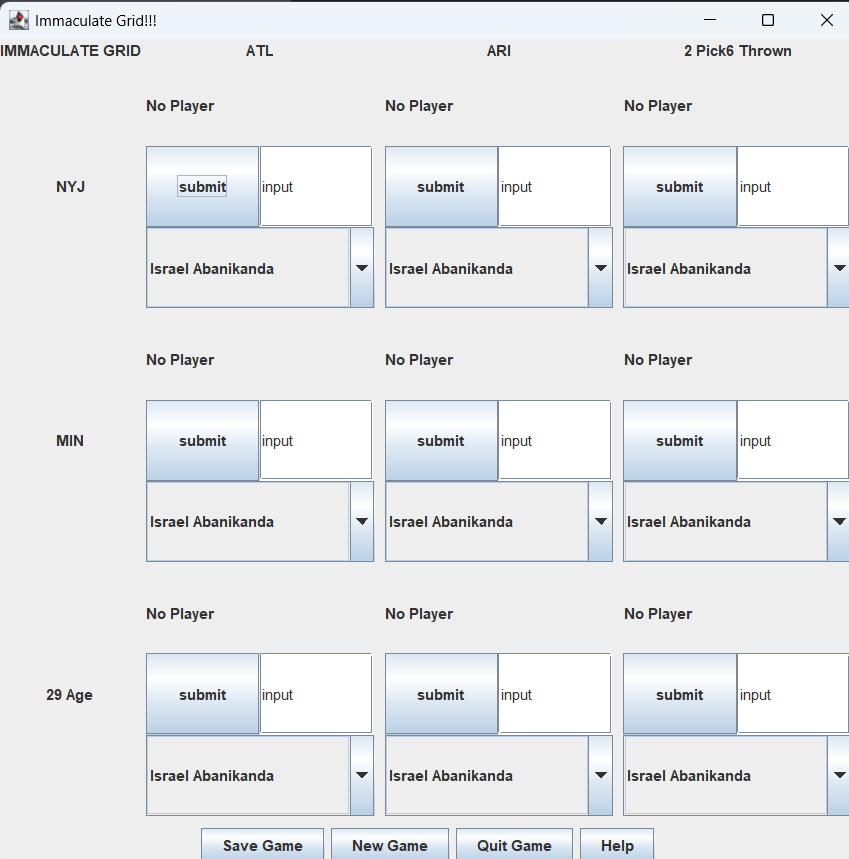

Portfolio
Immaculate Grid Recreation

Inspired by the online sports game Immaculate Grid, my CSSE 220 groupmates and I looked to create our own spin-off of the game, creating an interactive game from scratch.
Technology: Java, developed in IntelliJ
AP Research NFL Quarterback Salary Study

For my cumulative AP Research project, I investigated the salaries paid to the quarterback position in the National Football League and how it related to their performance.
Technology: Microsoft Excel